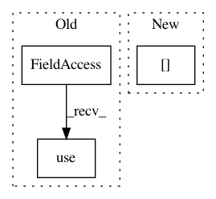

70722a84e7ae18a6faf616bc8f5b802689a67ff8,plots.py,,plot_partial_dependence,#Any#Any#Any#,726
Before Change
print("Custom 3d plot via ``partial_dependence``")
print
plt.style.use("classic")
fig = plt.figure()
target_feature = (1, 5)
pdp, (x_axis, y_axis) = partial_dependence(clf, target_feature,
After Change
target_feature = (1, 5)
pdp, axes = partial_dependence(clf, target_feature,
X=X_train, grid_resolution=50)
XX, YY = np.meshgrid(axes[0], axes[1])
Z = pdp[0].reshape(list(map(np.size, axes))).T
ax = Axes3D(fig)
surf = ax.plot_surface(XX, YY, Z, rstride=1, cstride=1, cmap=plt.cm.BuPu)
In pattern: SUPERPATTERN
Frequency: 3
Non-data size: 3
Instances
Project Name: ScottfreeLLC/AlphaPy
Commit Name: 70722a84e7ae18a6faf616bc8f5b802689a67ff8
Time: 2016-10-12
Author: Mark.R.Conway@gmail.com
File Name: plots.py
Class Name:
Method Name: plot_partial_dependence
Project Name: ScottfreeLLC/AlphaPy
Commit Name: 7a7d0e7b35cbee6b3409ac30ff4bf4edfe525af2
Time: 2019-11-17
Author: Mark.R.Conway@gmail.com
File Name: alphapy/plots.py
Class Name:
Method Name: plot_confusion_matrix
Project Name: cuemacro/finmarketpy
Commit Name: 28b13b95e0e552e96ff0e1965201c4aa31067bb9
Time: 2016-03-11
Author: saeedamen@hotmail.com
File Name: pythalesians/graphics/graphs/lowleveladapters/adapterpythalesians.py
Class Name: AdapterPyThalesians
Method Name: plot_2d_graph